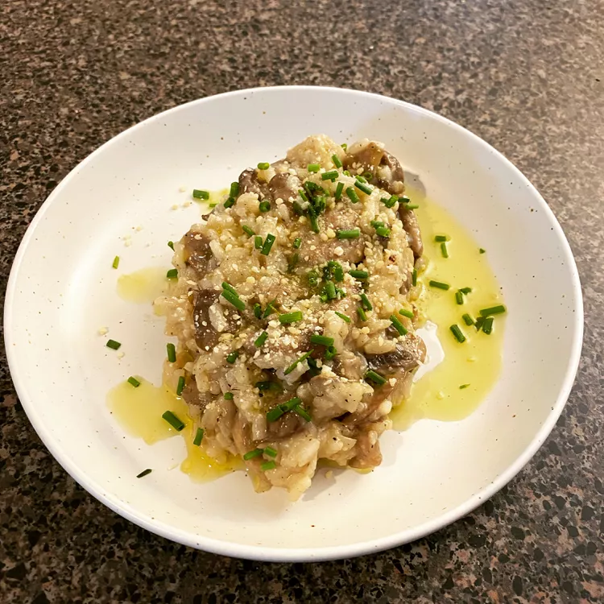

Creamy Wild Mushroom Risotto
Source

This savory wild mushroom risotto uses dried chanterelles. It's delicious topped with tangy Gorgonzola cheese.
Ingredients
- 2 ounces dried chanterelle mushrooms
- 1 ½ teaspoons butter
- 1 teaspoon truffle oil (Optional)
- 1 chopped onion
- 2 shallots, minced
- 1 clove garlic, minced
- 3 ounces sliced fresh button mushrooms
- 1 (12 ounce) package Arborio rice
- ½ cup dry white wine
- 1 quart hot chicken stock
- 2 tablespoons heavy cream
- 2 tablespoons crumbled Gorgonzola cheese, or to taste
- ground black pepper to taste
Steps
- Cover chanterelle mushrooms with hot water, cover, and set aside to soften for 30 minutes. Once soft, remove mushrooms from water and chop; discard water.
- Melt butter along with truffle oil in a large saucepan over medium-high heat. Add onion, shallot, and garlic; cook and stir two minutes until the onion begins to soften. Add fresh mushrooms; continue cooking until mushroom softens and begin to release their liquid. Stir in chopped chanterelle mushrooms, and cook 3 minutes more.
- Add Arborio rice; cook and stir for a few minutes until rice looks glossy and is well coated with onion mixture. Stir in white wine and cook until nearly evaporated.
- Reduce heat to medium; add 1/3 of the hot chicken stock. Cook and stir until chicken stock has been mostly absorbed, about 5 minutes. The risotto should be simmering gently while you stir in chicken stock. Add 1/2 of the remaining stock, and stir for 5 minutes more. Finally add remaining stock, and continue cooking until risotto is creamy and rice is tender, about 5 minutes more. The rice should not be completely soft, but still have a little firmness when you bite into it. You can add a little water if needed to cook the rice to this state.
- Remove risotto from the heat, and stir in heavy cream and Gorgonzola cheese. Season to taste with salt and pepper, and serve.
Back